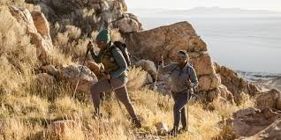

Hiking
Blogs- hiking, Sept 19, 2019

Hiking, the act of strolling down a path through nature, offers opportunities for exercise, socialization, learning, escape, reflection, expansion of thought, and improved mental well-being. While the benefits of hiking cover physical, social, familial, cognitive, mental, spiritual, and financial well-being. Hiking is a long, vigorous walk, usually on trails or footpaths in the countryside. Walking for pleasure developed in Europe during the eighteenth century. Religious pilgrimages have existed much longer but they involve walking long distances for a spiritual purpose associated with specific religions.
"Hiking" is the preferred term in Canada and the United States; the term "walking" is used in these regions for shorter, particularly urban walks. In the United Kingdom and the Republic of Ireland, the word "walking" describes all forms of walking, whether it is a walk in the park or backpacking in the Alps. The word hiking is also often used in the UK, along with rambling (a slightly old-fashioned term), hillwalking, and fell walking (a term mostly used for hillwalking in northern England). The term bushwalking is endemic to Australia, having been adopted by the Sydney Bush Walkers club in 1927. In New Zealand a long, vigorous walk or hike is called tramping. It is a popular activity with numerous hiking organizations worldwide, and studies suggest that all forms of walking have health benefits.
History
History of hiking, Sep 21, 2020

The poet Petrarch is frequently mentioned as an early example of someone hiking. Petrarch recounts that on April 26, 1336, with his brother and two servants, he climbed to the top of Mont Ventoux (1,912 meters (6,273 ft), a feat which he undertook for recreation rather than necessity. The exploit is described in a celebrated letter addressed to his friend and confessor, the monk Dionigi di Borgo San Sepolcro, composed sometime after the fact. However, some have suggested that Petrach's climb was fictional.
Jakob Burckhardt, in The Civilization of the Renaissance in Italy (in German in 1860) declared Petrarch "a truly modern man", because of the significance of nature for his "receptive spirit"; even if he did not yet have the skill to describe nature. Petrarch's implication that he was the first to climb mountains for pleasure, and Burckhardt's insistence on Petrarch's sensitivity to nature have been often repeated since. There are also numerous references to Petrarch as an "alpinist", although Mont Ventoux is not a hard climb, and is not usually considered part of the Alps. This implicit claim of Petrarch and Burckhardt, that Petrarch was the first to climb a mountain for pleasure since antiquity, was disproven by Lynn Thorndike in 1943. Mount Ventoux was climbed by Jean Buridan, on his way to the papal court in Avignon before the year 1334, "in order to make some meteorological observations". There were ascents accomplished during the Middle Ages; Lynn Thorndike mentions that "a book on feeling for nature in Germany in the tenth and eleventh centuries, noted various ascents and descriptions of mountains from that period", and that "in the closing years of his life archbishop Anno II, Archbishop of Cologne ((c. 1010 – 1075)) climbed his beloved mountain oftener than usual".
However, the idea of taking a walk in the countryside only really developed during the 18th century in Europe, and arose because of changing attitudes to the landscape and nature associated with the Romantic Movement. In earlier times walking generally indicated poverty and was also associated with vagrancy. In previous centuries long walks were undertaken as part of religious pilgrimages and this tradition continues throughout the world.